Overview
For our first group project, we are working on creating an electronic shelf, below are the initial schematics
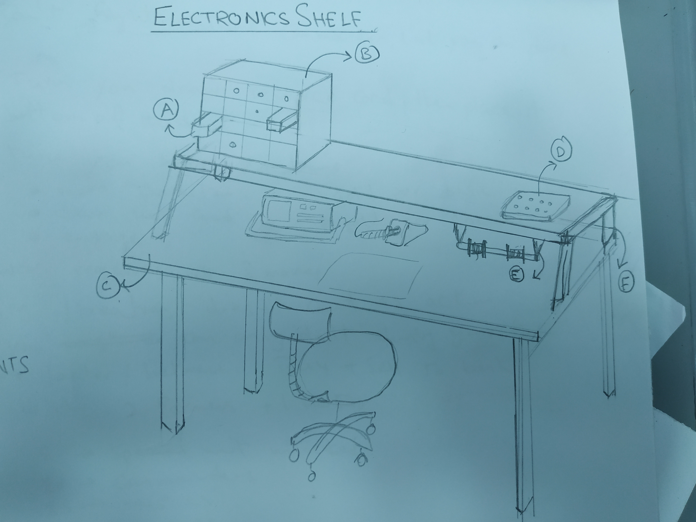This block is a proposed design for part “E” in the image above. It is crafted to hold spools and easily move it across the bench without much mess.
Initial Sketches
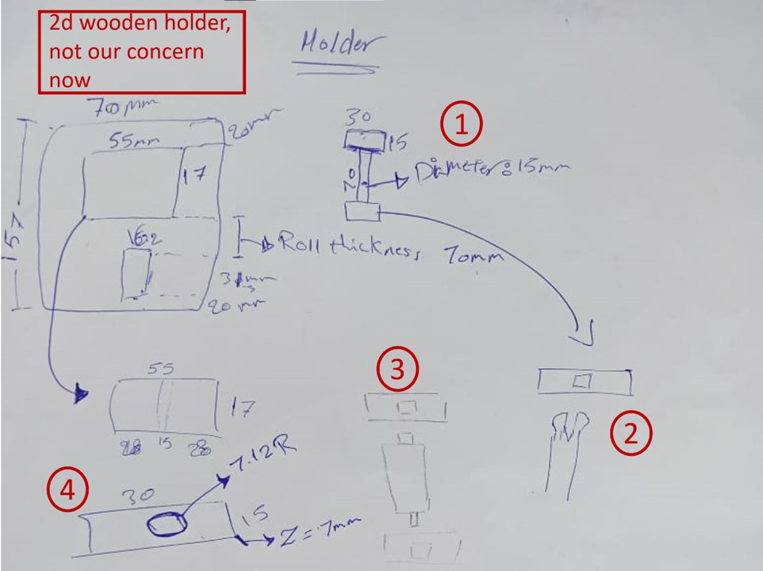Sketch 1: this design was to be 3d printed as a single part, but then we would not be able to get the spool in!
Sketch 2: this press fit junction –after some thought- would not be as efficient in such small dimensions.
Sketch 3: the square design would loosen up quickly and turn useless probably after a few weeks.
Sketch 4: the final design is a screw and nut design to solve all the above-mentioned problems.
CAD Design
To create that screw-nut design, you can refer to this short tutorial. The dimensions used here are:
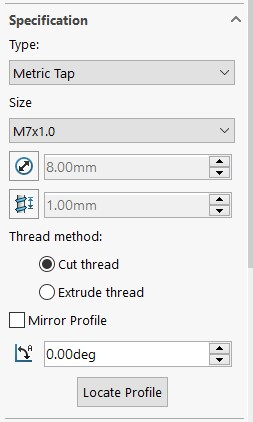 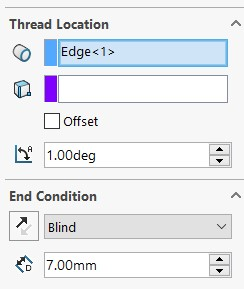 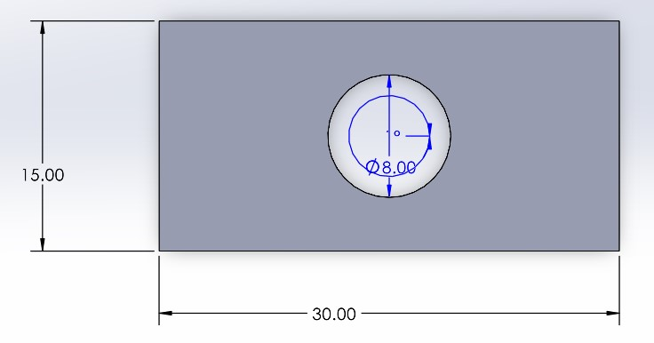 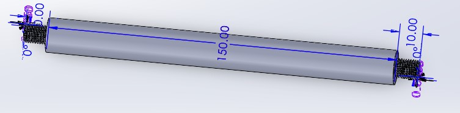CAM Design
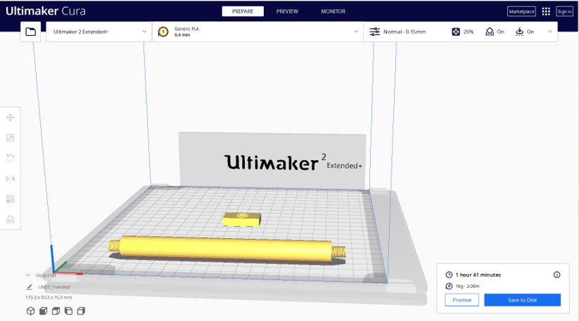 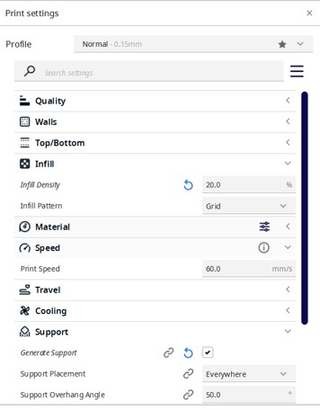Watch the Machine Working
Make sure that everything is fine then find something to do for a few hours until it is done printing””
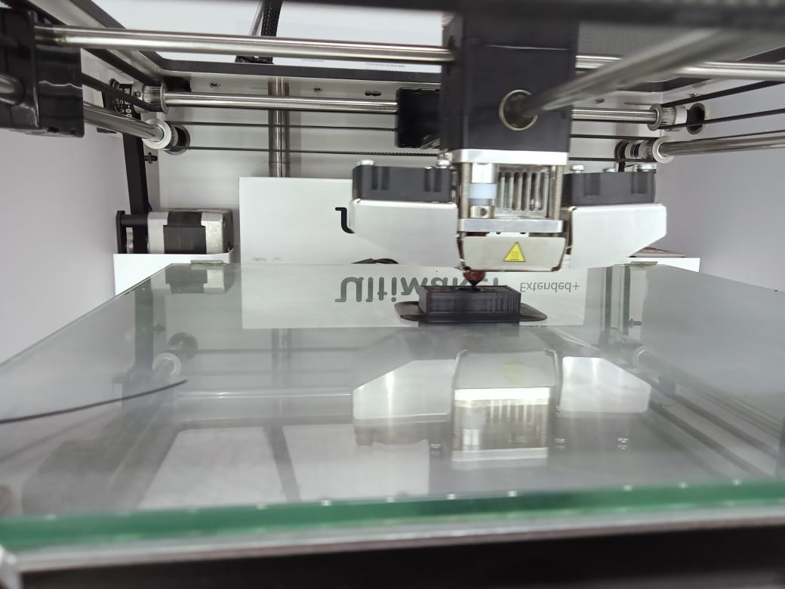 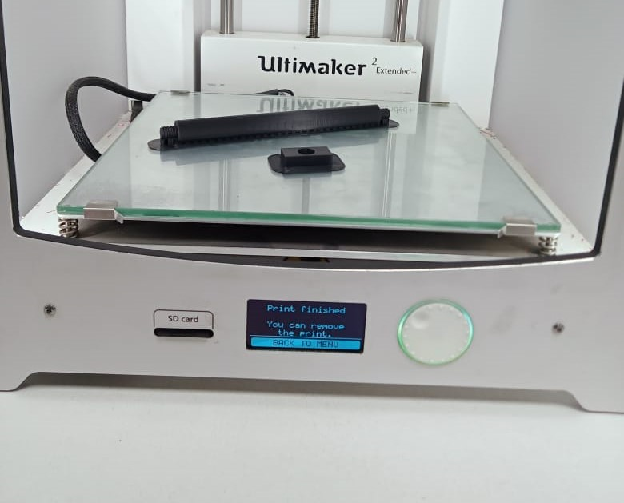Preparing for Trial
Once the machine has cooled down, you can bring clippers and start removing supports and rafts.
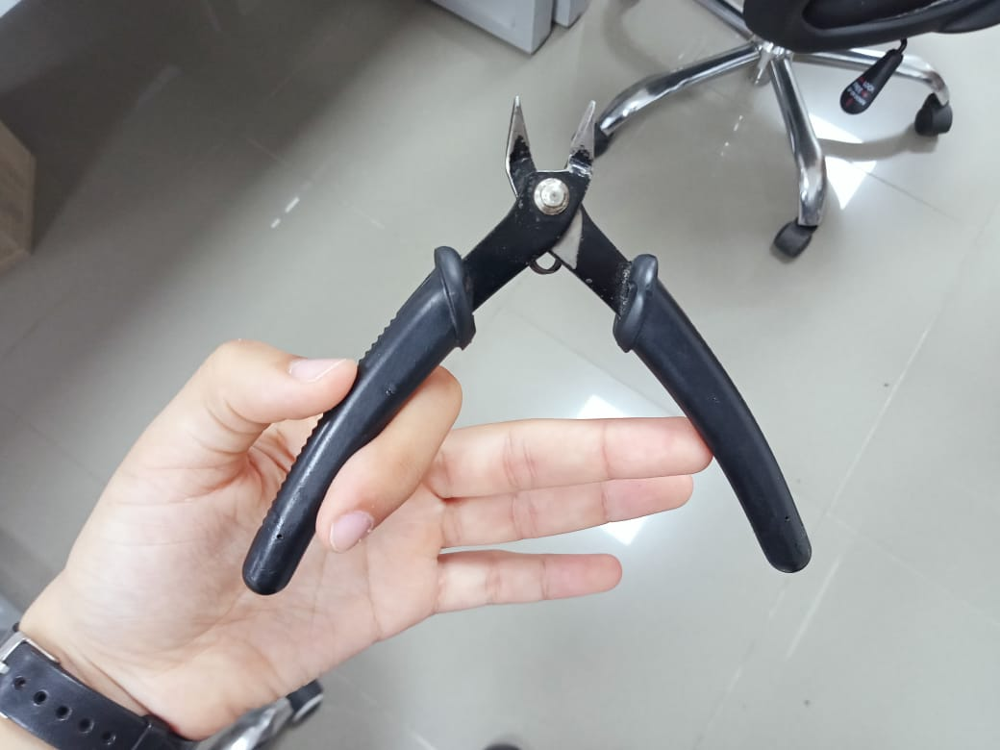 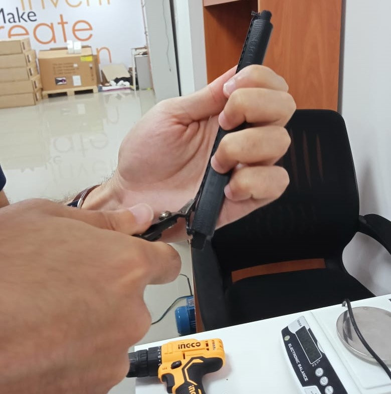Proposed Modifications
On a second thought, I think these modifications will extend the shelf life "literally" and make it more efficient. They still need testing though:)
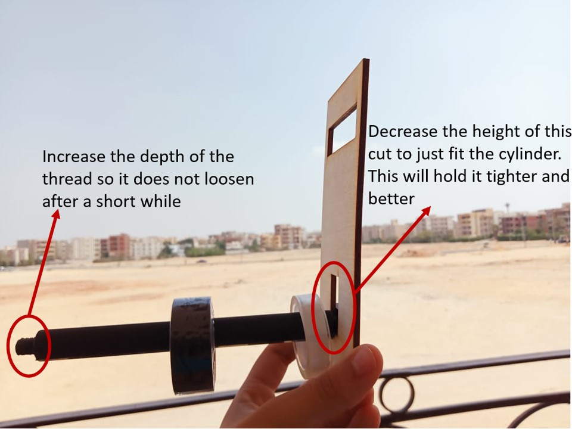Materials and Resources
You can find all the source/design files right here. Enjoy your time:)
Watch it at Work!
Check the group project page for updates!